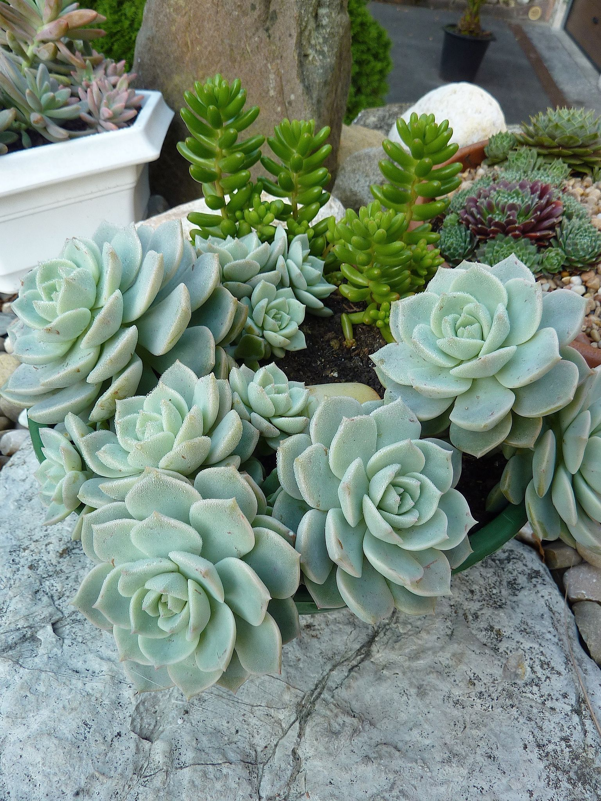
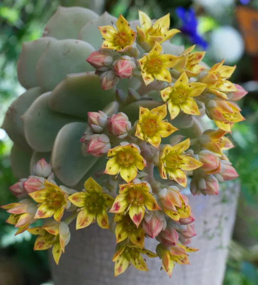

Common Name: Porcelain Plant, 白牡丹
Botanical Name: x Graptoveria ‘Titubans’
 
Other references
RHS
gardeningknowhow
worldofsucculents
surrealsucculents
Also known as the Porcelain Plant, it is a hybrid between Graptopetalum paraguayense x Echeveria derenbergii.
x Graptoveria ‘Titubans’ is a fantastic succulent with compact rosettes with silver-grey colouring. Under lower temperatures, you will notice hints of pink at the leaf tips and margins. It produces yellow flowers in spring.
An easy to grow plant. Looks great in a terrarium or other succulent planter.